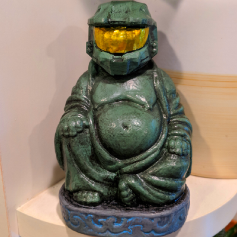

i have a strong background in digital content creation, music production, technical support and have experience in web development and design.
i'm forever looking to grow and learn new skills!
stack:
HTML5
CSS
in progress:
JavaScript
React

professional experience
Digital Content, Software and Hardware Technician
03/2025 – Present
The Solution House, Wetherby
End-to-end content production and technical support for digital signage projects, from initial brief to installation. I handle asset creation, bespoke app builds, and branding across a client roster that includes Jet2, Morrisons, Lidl, and Sally Beauty.
Daily, I'm juggling 5–10 support tickets simultaneously through Jira, which range from quick content tweaks to complex hardware faults that need real troubleshooting.
Beyond client work, I produce content for The Solution House itself — social media, client showcase reels, and WordPress content changes etc. I also handle internal IT support, which includes everything from software troubleshooting to hardware maintenance and network issues.
Tools I use daily:
- Adobe Creative Cloud (Photoshop, Illustrator, Premiere Pro)
- WordPress (HTML, CSS, JavaScript)
- Visual Studio
- Viplex Express/Handy and NovaLCT
- Jira and Trello
- Microsoft 365 (Office, Teams, OneDrive, Exchange, etc.)
Digital Media Specialist and IT Technician
07/2024 – 02/2025
Northgate Lighting, Leeds
Broad IT support role across this and multiple other sister companies with a strong focus on supporting web and media teams with technical tasks.
I supported the marketing team on WordPress and Shopify, produced web-focused media using Adobe Creative Cloud, Figma, and Canva, assisted with email development, created a handful of blog post copy and built several internal tools from scratch:
- web-based fire register
- Python UI for AI speech-to-text
- JavaScript web scraper
The rest of the role covered sysadmin and helpdesk work: managing 20+ daily tickets through Jira Service Management, Microsoft 365 administration, Active Directory, and training/onboarding of new staff on our software and remote infrastructure.
Tools I use daily:
- Adobe Creative Cloud (Photoshop, Illustrator, Premiere Pro)
- Figma and Canva
- WordPress and Shopify
- Jira
- Microsoft 365 (Teams, OneDrive, Exchange, Active Directory)
- HTML, CSS, Javascript and Python
Print Room Specialist
10/2022 – 07/2024
The Solution House, Wetherby
Senior responsibilities - project management.
Continuous learning and development of new equipment and techniques.